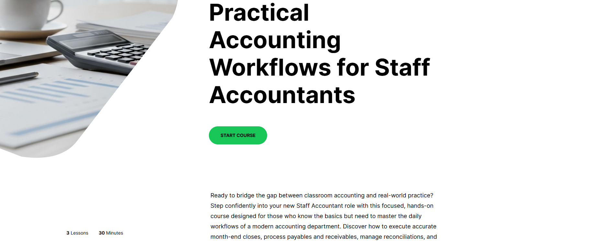
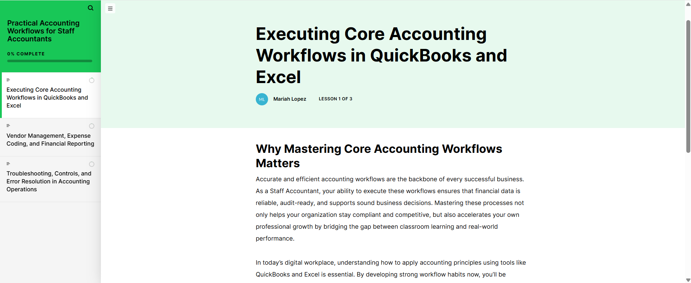

Instructional Design & eLearning Development
Accounting Fundamentals: QuickBooks for Entry-Level Staff
Developed an interactive eLearning course in Articulate 360 to onboard entry-level accounting staff in QuickBooks workflows, covering core data entry tasks, reconciliation, and reporting fundamentals.
Responsibilities
Learner Analysis
Conducted learner and task analysis for entry-level accounting roles using QuickBooks.
Learning Objectives
Defined measurable learning objectives aligned to core QuickBooks job tasks and onboarding needs.
Course Structure
Designed the course structure, module flow, guided practice activities, and knowledge checks.
Interactive Development
Developed interactive slides and scenario-based activities in Articulate 360.
Job Aids
Created supporting job aids and reference materials to reinforce learning after course completion.
Iteration
Reviewed and refined the course based on stakeholder feedback and learner clarity needs.

Overview
Creating structured QuickBooks onboarding for entry-level staff
This eLearning course was built in Articulate 360 to support accounting staff stepping into entry-level roles that require daily use of QuickBooks.
The course walks learners through foundational tasks, from navigating the dashboard and entering transactions to running basic reports, in a structured self-paced format designed for workplace onboarding.
Service Value
Reducing onboarding confusion and improving task confidence
The value of this project comes from creating a consistent training experience for entry-level accounting staff. The course helps learners understand QuickBooks workflows before performing live data entry, reducing confusion and supporting more accurate task performance.
Course modules covering navigation, transactions, accounts payable and receivable, and reporting.
Minute maximum seat time designed for busy workplace onboarding environments.
Required score on module knowledge checks before learners advance.

Problem & Goals
Preparing new accounting staff before live data entry
New accounting staff often receive minimal formal training on QuickBooks before being expected to perform live data entry. Errors in early task performance can compound across a company’s financial records.
The goal was to create a structured, consistent onboarding experience that builds confidence in core QuickBooks workflows and reduces data entry mistakes from day one.
Confidence
Give learners a safe, guided environment to practice common QuickBooks workflows.
Accuracy
Reduce early data entry mistakes by reinforcing procedures through examples and activities.
Consistency
Create a repeatable onboarding experience that can be used across entry-level accounting roles.
User Scenario
Start a New Role
An entry-level accounting staff member begins a role that requires daily use of QuickBooks.
Learn the Interface
The learner needs to understand where common tools, dashboards, and workflows are located.
Practice Core Tasks
The learner practices entering transactions, reviewing accounts, and managing basic accounting workflows.
Check Understanding
Knowledge checks confirm whether the learner understands the process before moving forward.
Apply on the Job
The learner uses job aids and course practice to complete QuickBooks tasks more confidently at work.
My Role
Designing the learning experience from task analysis to course build
As the instructional designer and course developer, I conducted a task analysis of key entry-level accounting responsibilities and mapped those tasks to specific QuickBooks functions.
I wrote the course content and quiz items, designed the module flow, created supporting job aids, and assembled the full interactive course in Articulate 360.
Entry-Level Accounting Staff
Learner using QuickBooks for daily accounting tasks
This learner needs a clear introduction to QuickBooks workflows before performing live data entry.
Goals
- Understand core QuickBooks navigation
- Practice common accounting workflows
- Complete tasks with fewer mistakes
Accounting Manager
Stakeholder responsible for onboarding consistency
This stakeholder needs new staff to learn consistent procedures without requiring constant one-on-one support.
Goals
- Standardize onboarding
- Reduce repeated training questions
- Improve early task accuracy
Discovery & Constraints
Designing a realistic course without live software access
Discovery involved reviewing daily task lists for entry-level accounting roles and identifying the QuickBooks functions that caused the most confusion or errors during onboarding.
Key constraints included keeping total seat time under 45 minutes and ensuring the course could be completed without a live QuickBooks login.
Seat Time
The course needed to stay concise enough for a busy work environment.
Software Access
The course needed simulated screen interactions instead of requiring a live QuickBooks account.
Task Accuracy
Examples and activities needed to reflect realistic accounting workflows and common learner mistakes.
Key Features
Interactive QuickBooks Simulations
Simulated screen interactions allowed learners to practice QuickBooks workflows without needing access to a live software environment.
Scenario-Based Activities
A branching scenario in Module 2 presented a realistic data entry error and asked learners to identify and correct the mistake.
Job Aid Support
A supporting job aid summarized common QuickBooks shortcuts and task reminders for use after course completion.
Information Architecture & User Flows
Organizing the course around real accounting workflows
The course is organized into four modules: navigating QuickBooks, recording transactions, managing accounts payable and receivable, and running basic reports.
Each module includes a brief introduction, worked examples with annotated screenshots, a guided practice activity, and a short knowledge check.
Primary Learner Flow
The learner moves sequentially through the four modules, with knowledge checks gating progression to the next module.
Wireframes & Prototypes
Storyboarding the course before full development
Course wireframes were developed in a slide-based storyboard format, mapping each screen’s content, interaction type, and audio narration notes. A low-fidelity prototype was reviewed with an accounting subject matter expert to validate task accuracy before full development in Articulate 360.
Requirements & Acceptance Criteria
Aligning learning objectives with measurable task performance
Learning objectives were written using measurable action verbs such as identify, demonstrate, and apply. Each objective was mapped to a specific QuickBooks task scenario.
Assessment items required learners to achieve 80% on each module knowledge check before advancing. Accessibility requirements included alt text on screenshots, sufficient color contrast, and keyboard-navigable interactions.
Analytics, Iteration, Outcomes & Next Steps
Refining the course through feedback and learner review
The published course was reviewed by two accounting staff members who completed it in full and provided feedback on task accuracy and clarity.
One iteration cycle refined the transaction entry scenarios in Module 2 and clarified the report export walkthrough in Module 4 based on reviewer comments.
Add a Module 5 covering QuickBooks payroll basics.
Develop a manager guide for post-course coaching conversations.
Use completion and quiz score data to identify future course improvements.
Next Steps
Next steps include adding a payroll basics module, expanding the scenario-based practice activities, and creating a manager’s guide for reinforcing course content during onboarding.
Future iterations would use learner completion data, quiz scores, and manager feedback to identify where learners need additional support.
Learnings
This project strengthened my ability to connect instructional design, software training, and workplace documentation into a practical onboarding experience.
I also learned how important it is to design eLearning around real job tasks rather than software features alone, especially when learners need to apply the material quickly in a work environment.